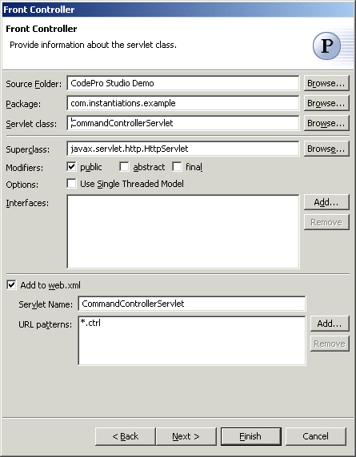
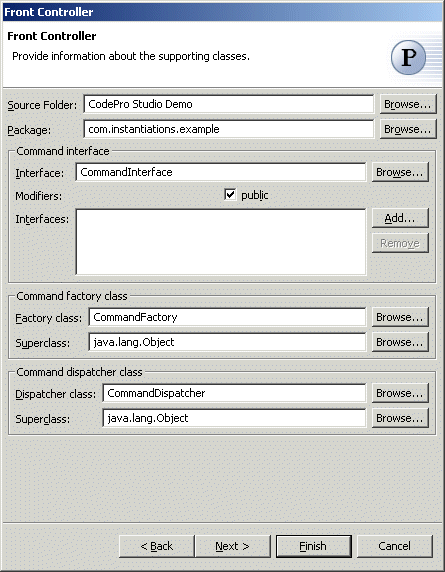
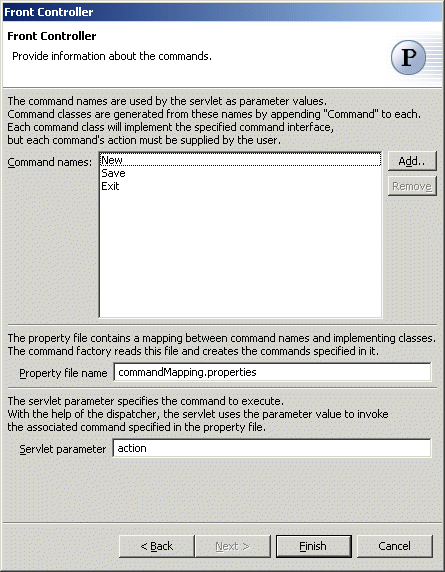

Front Controller Pattern
The  Front Controller pattern provides a centralized entry point that controls and
manages Web request handling. By centralizing decision points and controls, the
controller also helps reduce the amount of JavaTM
code, called scriptlets, embedded in the JavaServer PagesTM
(JSPTM) page.
Front Controller pattern provides a centralized entry point that controls and
manages Web request handling. By centralizing decision points and controls, the
controller also helps reduce the amount of JavaTM
code, called scriptlets, embedded in the JavaServer PagesTM
(JSPTM) page.
Wizard
Applicability
Additional Resources
Wizard
| Option | Description | Default |
| Source folder | Enter a source folder for the servlet class. Either type a valid source folder path or click Browse to select a source folder via a dialog. | The source folder of the element that was selected when the wizard was started. |
| Package | Enter a package to contain the servlet class. Either type a valid package name or click Browse to select a package via a dialog. | The package of the element that was selected when the wizard was started. |
| Servlet class | Enter a name for the servlet class. | <CommandControllerServlet> |
| Modifiers | Select one or more access modifiers for the servlet
class:
|
public |
| Superclass | Type or click Browse to select a superclass for the servlet class. | <javax.servlet.http.HttpServlet> |
| Use Single Thread Model | Determines whether the servlet implements the SingleThreadModel interface. This guarantees that there will not be simultaneous access to the same servlet instance, which has a tendency to stabilize thread execution ordering | <false> |
| Interfaces | Click Add to choose interfaces that the servlet should implement. | <blank> |
| Add to web.xml | Determines whether the project's web.xml file should be modified to list the servlet information. (If the project is not a Web project, web.xml is assumed to be in the project root.) | <true> |
| Servlet name | Enter a name for the servlet. | <CommandControllerServlet> |
| URL Patterns | Click Add to specify URLs that should be mapped to the servlet. | <*.ctrl> |
Wizard
| Option | Description | Default |
| Source folder | Enter a source folder for the supporting classes. Either type a valid source folder path or click Browse to select a source folder via a dialog. | The source folder of the element that was selected when the wizard was started. |
| Package | Enter a package to contain the supporting classes. Either type a valid package name or click Browse to select a package via a dialog. | The package of the element that was selected when the wizard was started. |
| Command interface | Enter a name for the command interface that command must implement. | <CommandInterface> |
| Modifiers | Select one or more access modifiers for the command
interface:
|
public |
| Interfaces | Click Add to choose interfaces that the command interface should extend. | <blank> |
| Command factory class | Enter a name for the command factory class that produces commands. | <CommandFactory> |
| Command factory superclass | Type or click Browse to select a superclass for the command factory class. | <java.lang.Object> |
| Dispatcher class | Enter a name for the dispatcher class that dispatches commands. | <CommandDispatcher> |
| Dispatcher superclass | Type or click Browse to select a superclass for the dispatcher class. | <java.lang.Object> |
Wizard

| Option | Description | Default |
| Command names | Click Add to enter the names of the concrete command classes that should be created as implementors of the command interface. | <blank> |
| Property file name | Enter the name of the file that maps command names to command classes. | <commandMapping.properties> |
| Servlet parameter | Enter the name of the servlet parameter used to pass command names in requests. | <action> |
Applicability
Use the Front Controller pattern when- Multiple views are used to respond to similar business requests.
- A centralized point of contact for handling a request may be useful, for example, to control and log a user's progress through the site.
- System services and view management logic are relatively sophisticated.
Additional Resources
http://java.sun.com/blueprints/corej2eepatterns/Patterns/FrontController.htmlhttp://java.sun.com/blueprints/patterns/FrontController.html